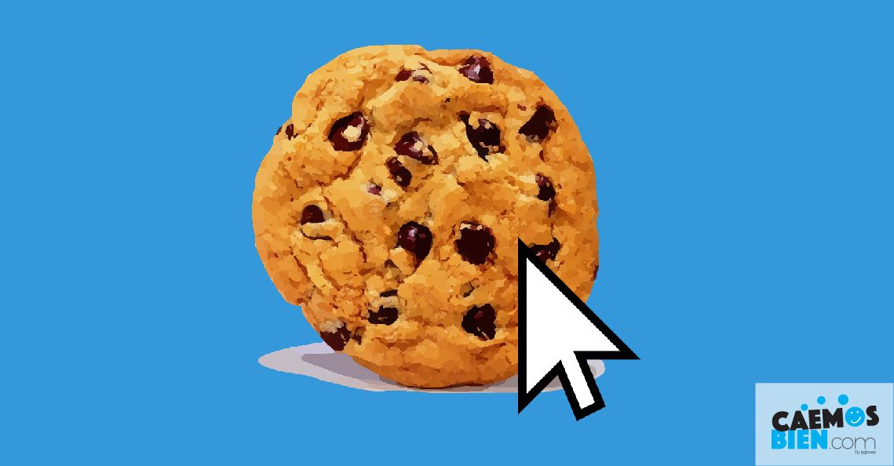

|  |
¿QUE SON LAS COOKIES?Una cookie es un archivo creado por un sitio web que contiene pequeñas cantidades de datos y que se envían entre un emisor y un receptor. En el caso de Internet el emisor sería el servidor donde está alojada la página web y el receptor es el navegador que usas para visitar cualquier página web. |
SU CREACIONLa primera cookie se creó en 1994 cuando un empleado de Netscape Communications decidió crear una aplicación de e-commerce con un carrito de compras que se mantuviese siempre lleno con los artículos del usuario sin requerir muchos recursos del servidor. El desarrollador decidió que la mejor opción era usar un archivo que se guardara en el equipo del receptor, en lugar de usar el servidor del sitio web. Las cookies ya existían desde hace algún tiempo, solo que nunca se habían usado en los navegadores. Luego de la creación de esta aplicación comenzaron a aparecer navegadores que soportaban la utilización de cookies, Internet Explorer 2 y Netscape fueron los primeros. |
|